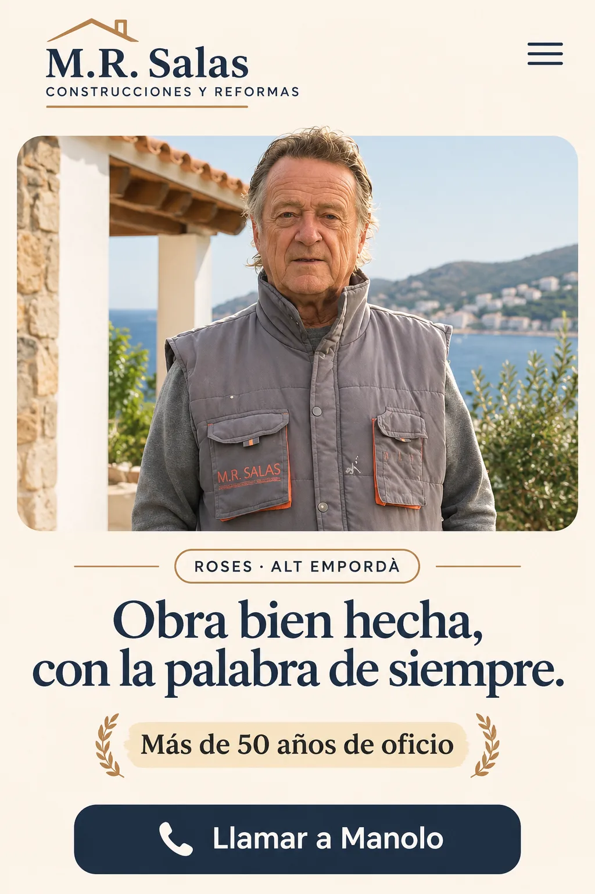
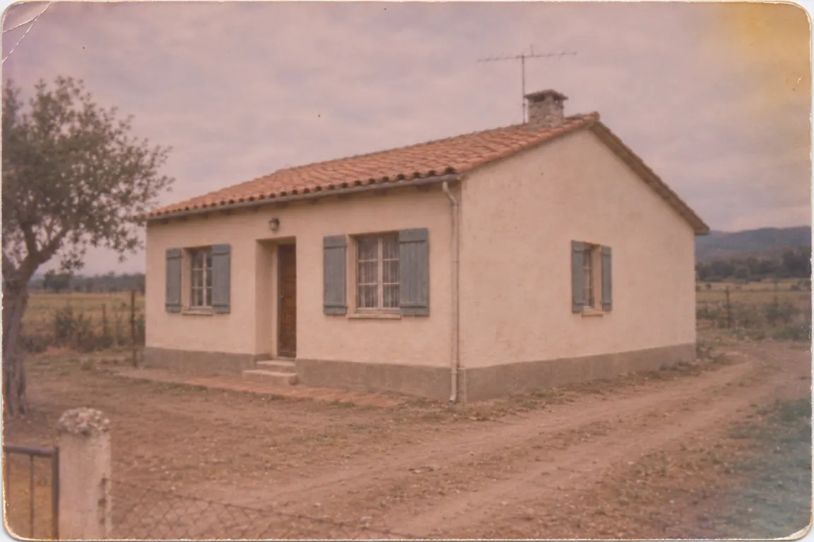
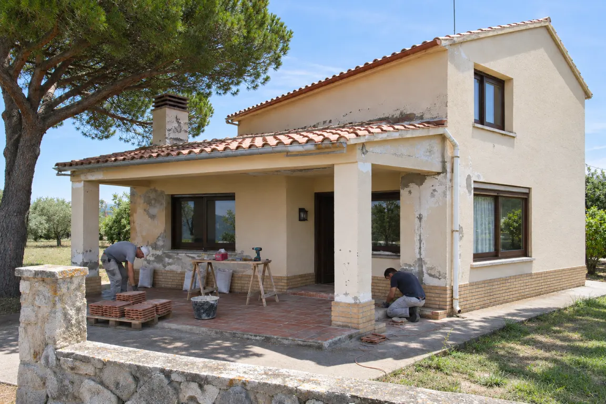
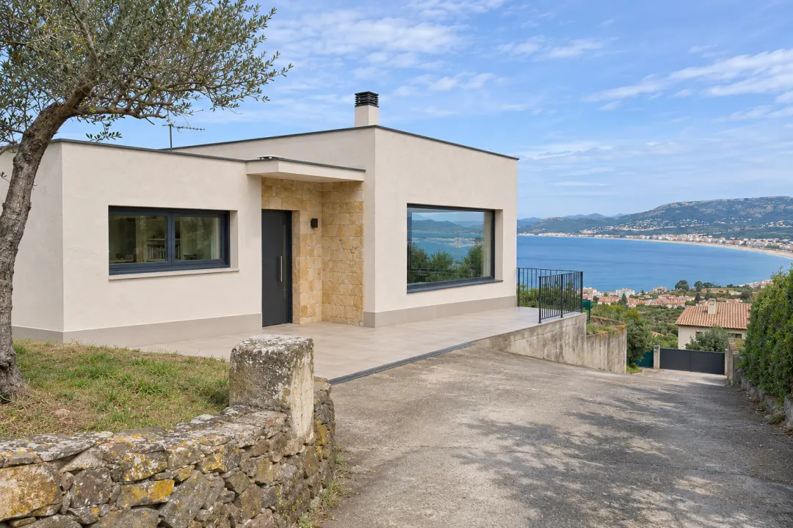

Roses · Alt Empordà
Obra bien hecha,
con la palabra de siempre.
Más de 50 años de oficio
Llamar a ManoloCuatro épocas de obra y reforma
Desliza por la página o pulsa «Antes» y «Después» para ver cada transformación.
Recreaciones ilustrativas de obra y reforma.
Años 80
Revoco desprendido y contraventanas desgastadas.


Años 90
Desconchados en la fachada y humedad bajo el balcón.


Años 2000
Porche deteriorado y pavimento exterior dañado.


2026
Villa en obra con trabajos de albañilería en las dos plantas y el mar al fondo.

Lo que no se ve en una reforma
En una fachada con humedad, estos tres puntos ayudan a entender por dónde entra el agua y cómo sale.

Ejemplo ilustrativo de una fachada rehabilitada.
El encuentro con la ventana
Revisamos la junta entre el marco y la pared y el vierteaguas de debajo. Ese remate ayuda a que la lluvia caiga hacia fuera y se separe de la fachada.
Conoce a Manolo
Lleva más de 50 años levantando, reformando y reparando casas en el Empordà. La primera visita es para ver la obra contigo, hablar de qué hace falta y decidir por dónde empezar.
Tratas directamente con él, desde esa primera visita hasta el último repaso.
Trabajos
De un arreglo a una reforma entera.
Reformas de vivienda
Actualizar una casa, un piso o una segunda residencia.
Baños y cocinas
Renovar los espacios que más usas cada día.
Albañilería y obra menor
Reparaciones y trabajos pequeños que merecen hacerse bien.
Fachadas y rehabilitación
Reparar muros, revocos y acabados exteriores.
Tejados y goteras
Revisar cubiertas y buscar el origen de las filtraciones.
Piedra y exteriores
Muros, pavimentos y remates de piedra.
Preguntas antes de empezar
¿Haces trabajos pequeños?
Sí. Cuéntame qué necesitas y dónde está la vivienda.
¿Qué te cuento cuando te llame?
Dime el municipio, qué quieres reformar o reparar y si es urgente. Si tienes fotos, también puedes enviarlas por WhatsApp.
¿Trabajas fuera de Roses?
Trabajo en Roses y el Alt Empordà. Dime dónde está la obra y lo vemos.

Contacto
Hablemos de tu obra.
Cuéntame qué quieres hacer y dónde está la vivienda.